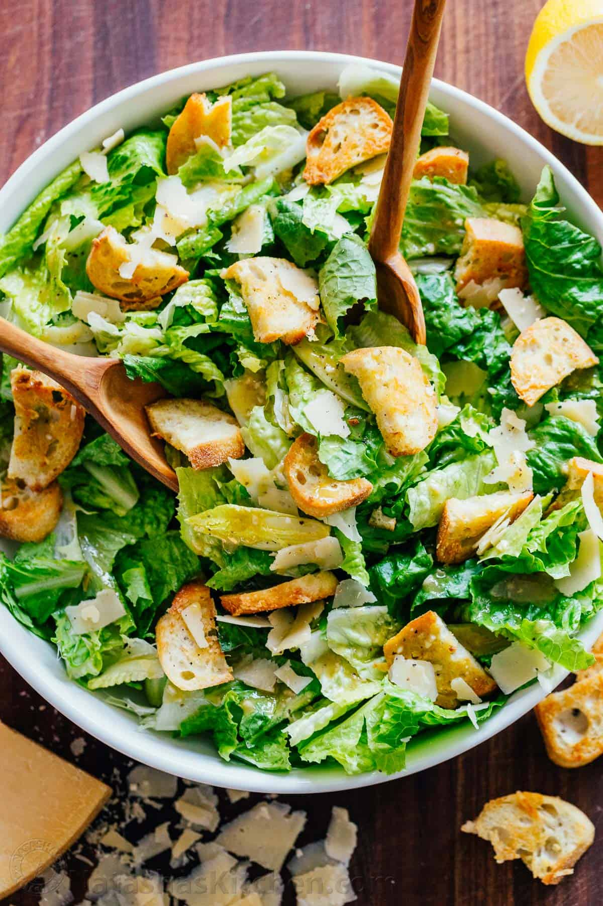

Ceasar Salad Recipe

Classic Caesar Salad with crisp homemade croutons and a light caesar dressing for when you want to impress your dinner guests
Ingredients
For the Croutons:
- 1/2 french baguette, cut in half and thinly sliced
- 1 tsp minced garlic, 2 small cloves
- 2 Tbsp grated parmesan cheese
Caesar Salad dressing:
- 2 small garlic cloves, minced
- 2 tsp dijon mustard
- 1 tsp Worcestershire sauce
- 1 1/2 tsp red wine vinegar
- 1/3 cup extra virgin olive oil
- 1/2 tsp sea salt
- 1/8 tsp black pepper, plus more to serve
For the Caesar Salad:
- 1 large romaine lettuce
- 1/3 cup parmesan cheese, shredded or shaved
Intructions
How to Make Croutons
- Preheat oven to 350˚F. Cut the baguette in half lengthwise through the top of the baguette then slice diagonally into 1/4" thick pieces. Place the breads onto a baking sheet.
- In a small bowl, combine 3 Tbsp extra virgin olive oil and 1 tsp of finely minced garlic. Drizzle the garlic oil over the croutons and sprinkle the top with 2 Tbsp grated parmesan cheese.
- Toss until evenly coated. Spread in a single layer over the baking sheet and bake at 350˚F until light golden and crisp (10-12 minutes), or to desired crispness.
How To Make Caesar Salad Dressing:
- In a small bowl, whisk together garlic, dijon, Worcestershire, lemon juice and red wine vinegar.
- Slowly drizzle in extra virgin olive oil while whisking constantly.
- Whisk in 1/2 tsp salt and 1/8 tsp black pepper, or season to taste.
How to Make Caesar Salad
- In a large mixing bowl, combine all of your ingredients and toss gently to coat the lettuce in caesar dressing. This recipe makes enough croutons for two full salads so you'll have them ready to go for round 2!